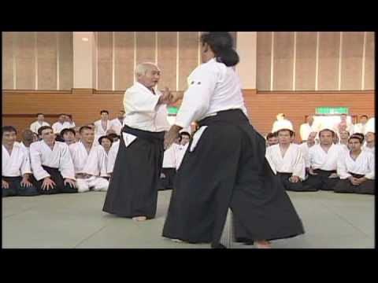

30+ anos
História ativa no ABC
Morihei Ueshiba (1883 - 1969)
O Aikido é uma arte marcial japonesa focada em resolver conflitos sem agressão. No Templo Dojo, você desenvolve técnica, presença e autocontrole com treino consistente.


A arte
Utilizamos torções, projeções e deslocamentos para neutralizar ataques com eficiência e respeito. Não é sobre força bruta: é sobre postura, timing, distância e energia do corpo inteiro.
Os treinos incluem taijutsu e armas tradicionais japonesas, como o bastão Jo e a espada de madeira Boken.
Desde 1995
O Templo Dojo foi fundado em 1995, com filiação à Federação Paulista de Aikido e Aikikai do Japão. A principal influência técnica vem do mestre Shiran Hiroshi Isoyama. Os treinos são ministrados pelo Sensei Maurício Fujimoto (6º Dan) e equipe, com ampla vivência em seminários internacionais e práticas no Japão.
História ativa no ABC
Práticas por semana
Ligação com Aikikai Japão
Instrução orientada e segura
Como treinamos
Jo e Boken para desenvolver distância, tempo, foco e movimento.
Técnicas de projeção, imobilização e deslocamento com controle.
Aulas aos sábados com fundamentos de disciplina e coordenação.
Vivência com mestres e praticantes de diferentes escolas e países.
Agenda semanal
Aikido Corporativo
Leve os princípios do Aikido para o ambiente de trabalho. Programas corporativos com foco em comunicação, equilíbrio sob pressão e colaboração.
Conhecer programa corporativoVídeos

Assistir no YouTube